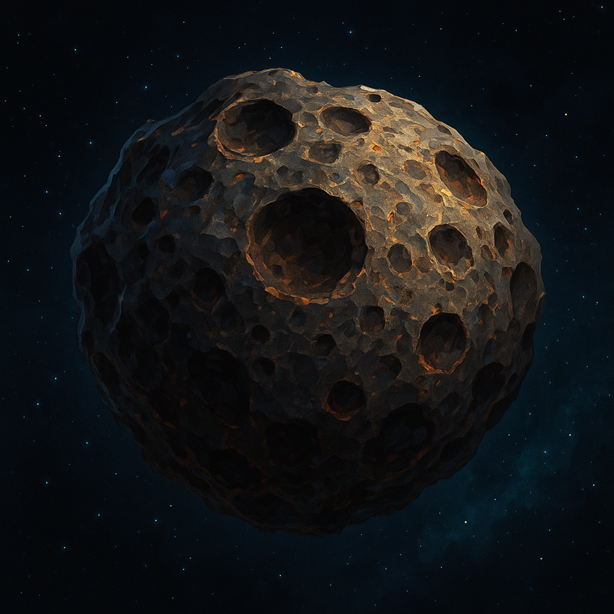
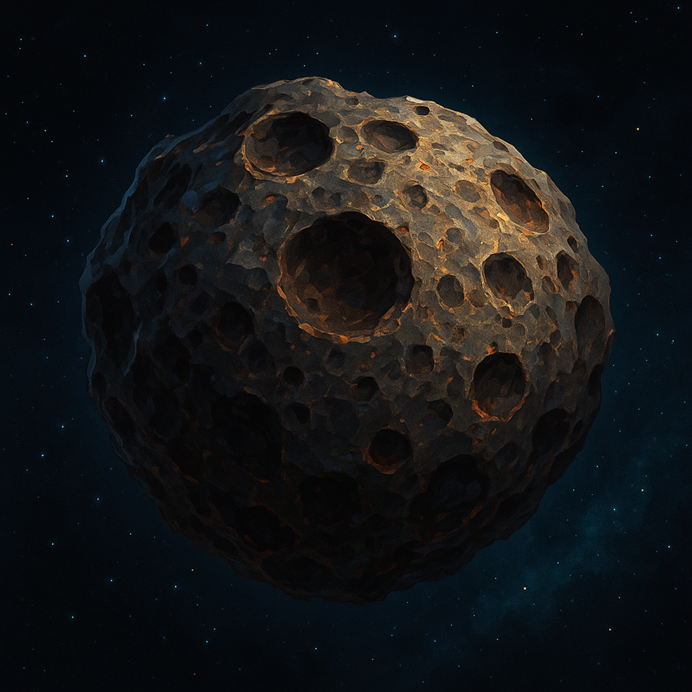

Waffen aus Metroid Prime

Unserer Heldin stehen natürlich einiges an Waffen zur Verfügung
Power Beam

Der Power Beam ist der Standard-Beam in allen Metroid-Teilen und im Multiplayer-Modus, man besitzt ihn von Anfang an. Er ist der schwächste Beam und kann durch entsprechende Erweiterungen verbessert werden.

Wave Beam

Der Wave Beam ist eine Beamerweiterung, die jeden Schuss teilt und durch Wände durchfliegen lässt. Er erhält seinen Namen duch die Wellenbewegungen, die die kreisrunden Partikel beim Schuss verursachen.

Ice Beam

Der Ice Beam kann Gegner zu Eis erstarren lassen. Diese Fähigkeit wird vor allem dazu benutzt, um Metroids kalt zu stellen. Aber auch starke Gegner werden dadurch eingefroren. Eingefrorene Gegner können mit einer einzelnen Missile besiegt werden. Eine Ausnahme bilden die Gegner in der Eiswüste von Phendrana, da diese im Eis aufwachsen. Bei stärkeren Gegnern werden meist nur einige Körperteile eingefroren. Dies führt dazu, dass sie feststecken oder die eingefrorenen Körperteile verlieren. In Metroid Prime lässt sich der Ice Beam nur mit einer Sekunde Schussunterschied abfeuern, er ist also ziemlich langsam. Auch die Geschosse sind sehr träge, sodass viele Gegner ihnen über mittlere bis längere Distanz ausweichen können. Der Beam ist dadurch für Gebiete, in denen man auf viele, flinke Gegner trifft, ungeeignet. Das gilt jedoch nicht für die 2D-Spiele, in denen der Ice Beam deutlich schneller ist.

Plasma Beam

Der Plasma Beam ist eine Beam-Erweiterung für Samus Aran's Waffenarm. Er kommt in den meisten Metroid-Teilen vor und ist meistens der Stärkste aller Beams.

Beschreibung
In den 2D-Metroids ist der Plasma Beam derart stark, dass er in der Lage ist Gegner zu durchdringen.Später in Metroid Prime ist der Plasma Beam der letzte einsammelbare Beam (abgesehen vom Phazon Beam) und feuert Strahlen flüssiger, hochtemperierter Energie. Er kann mit der gleichen Geschwindigkeit abgefeuert werden wie der Wave Beam, hat nur eine geringe Reichweite, ist gegen die meisten Gegner effektiv (außer in den Höhlen von Magmoor) und kann diese in Brand setzen.
Missile

Missiles sind kleine Raketen, die Samus abfeuern kann, indem sie den Waffenarm öffnet. Sie kommen in allen Metroid-Teilen vor und werden meistens gleich am Anfang eingesammelt.
Power Bombe

Power Bomben sind die stärkere Version der Bomben. Sie benötigen einen Munitionsvorrat, der durch Power Bomben Container erweitert werden kann. Samus kann immer nur eine Power Bombe auf einmal legen. Um dies zu tun, muss man entweder eine spezielle Taste drücken oder (wie in Metroid: Other M) eine Bombe voll aufladen und dann loslassen. Die Power Bomben sind so stark, dass sie sogar Denzium wegsprengen.In Metroid: Other M ist dies die stärkste Möglichkeit einen Gegner zu töten, wobei dies bei vielen Gegnern schon ein "One Hit Kill" ist.
Phazon Beam

Der Phazon Beam ist abgesehen von der Omega-Kanone aus Metroid Prime: Hunters die stärkste Waffe aus allen Metroid-Spielen und kommt nur in der Trilogie zum Einsatz. Er ist eine Weiterentwicklung des Plasma-Beams und kann nur eingesetzt werden, wenn Samus mit Phazon infiziert ist. Der Phazon Beam kann Gegner mit einem einzigen Schuss töten und ist gegen alle Gegner effektiv, auch gegen die sonst immunen. Der Phazon Beam kann auch aufgeladen werden, um einen noch stärkeren Schuss abzugeben